FomentoTravel


HOTELS
CIDADE DE GOA
Cidade De Goa is luxurious beach resort spread across an area of 40 acres of lush green landscape. Walk through the resort to the beautiful beach of Vainguinim and enjoy the best of the both worlds as you sip on cocktails at the poolside bar while you enjoy scintillating sunset views. This resort is one of the most iconic resorts in Goa with its distinct Portuguese and Iberian architecture.

Ramada Caravela Beach Resort
Located on the serene sands of Varca Beach, Ramada Caravela Beach Resort is a lush property, aesthetically designed to give you a rejuvenating experience. Each of the guest rooms, suites and villas has a private balcony that overlooks either the ocean or landscaped gardens or one of Goa's largest pool. A 9 hole golf course, a Casino and an Ayurveda Centre, differentiates this from any other five star in Goa.
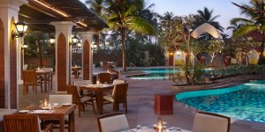
RESORT RIO
Resort Rio a 5 star Resort and Spa nestled on the banks of the Baga River. It is best known for its proximity to some of the most happening restaurants and pubs in the belt. The Resort is spread over 15 acres of serene riverside paradise and serves as an ideal location to stretch your legs and let go of your worries.
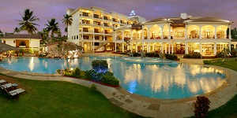
The Leela Goa
The Leela Goa is one of those breath taking 5 star resorts that leave you in awe .The hotel is set in 75 lush acres with a pristine beach, a 12 hole golf course and world class dining making it the finest 5 star hotels in Goa.
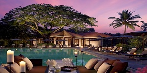
Wildernest
Nestled in the Swapnagandha valley, amidst thick expanse of forest tracts Wildernest is an experience by itself. The resort has well equipped wooden cottages and a gorgeous infinity pool overlooking the Vazra falls with breathtaking panoramic view of Goa. Wildernest is an unsung wonder created to introduce you to your roots of nature and culture.
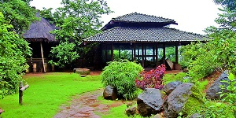
Beaches
Agonda Beach
Labelled as one of the most beautiful beaches in Asia, Agonda beach truly lives to this title. The beach is serene and clean owing to the fact that street vendors and hawkers are banned from the area. It is an ideal beach to spend time relaxing and meditating.

Candolim Beach
Located 15 Kms from the Capital City of Panjim, Candolim beach is a peaceful beach which is located quiet close to the Aguada beach. It is preferred over the other beaches owing to its serene and tranquil environment. Candolim beach also offers various sports and has some of the finest seafood shacks along it.
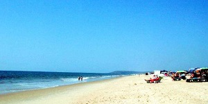
Vagator Beach
Vagator beach is divided into two, Vagator and Ozran. Ozran beach is a small rocky beach, with coconut trees along the coast, it’s a great place to seek solitude as you are engulfed in nature, and is a nice alternative to other busier beaches. The main beach is livelier and more commercial.

Anjuna Beach
Infamous for the hippies that inhabited the area, Anjuna Beach is a vibrant and lively beach in North Goa. Although small in size the beach has inviting blue waters and beach beds for those who just want to bask in the sun. The belt has a number of famous party shacks that offer breathtaking sea views.
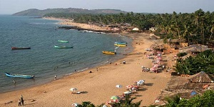
Cavellosim Beach
Situated in the South of Goa, Cavellosim Beach is famous for its Virgin white sands that are a contrast to the deep brown rocks. Cavellosim Beach offers tourists a lot of activities like dolphin cruises, water sports and other activities.
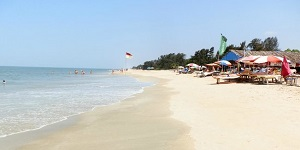
Morjim Beach
Situated in North Goa, Morjim is a tranquil beach and counted among the most beautiful beaches in Asia. Serene and scenic, Morjim has some of the best beach side shacks and lounges. Amongst the many unique things offered is a chance to admire the views of Chapora Fort on the opposite side, and perhaps get a glimpse of the Olive Ridley turtle who nest on these shores.
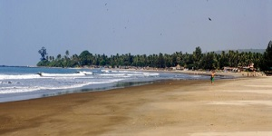
Palolem Beach
Palolem is a popular beach in South Goa. It’s deep blue waters, golden sands and beautiful panoramic sunset views make this beach a visual treat. Along the beach you will find wooden huts and tempting beach side shacks. For the adventurous, there is Kayaking and an array of other water sports.
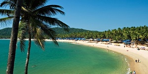
Colva Beach
This expansive beach in South has white sands and has a shore covered with coconut trees. Besides the regular commercial trappings of an idyllic Goan beach with the likes of water scooter, parasailing, boat rides, the beach is full of shells and star fish making your experience fulfilling and unique.
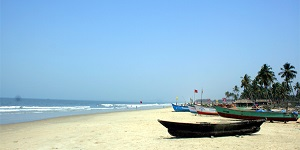
Heritage
The Forts
Forts in Goa may not be as big in sizes as its Indian counterparts, but they are equally soaked in history and legacy. Forts like Reis Magos and Aguada are located at convenient distances from the beaches and resorts and offer breathtaking views of the landscape and the coastline. Other forts like Chapora, Terekol, Cabo de Ram, Marmugao and Rachol are worth exploring for the history enthusiast.

Churches & Temples
Most of the churches in Goa were built during Portuguese era. Churches in Goa are renowned for their interesting architecture which is a blend of two or more styles and has various architectural influences. Most of the temples are surrounded by large well maintained courtyards, mostly with an attached water body that serves as a ritualistic cleaning place to devotees. A drive from Panaji to Ponda via Old Goa will cover most of the major churches and temples in Goa.
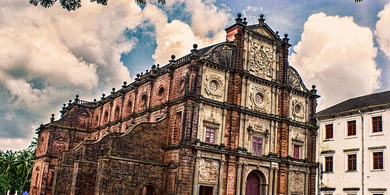
Architecture
The Architecture in Goa is debatably the only remaining account of the wide spectrum of its rich heritage. The Architecture retains the functional elements of the pre-colonial period but also showcases the subsequent influence of European architecture with its elements of classical, gothic and manueline design forms.

The Furniture
A blend of functionality and art, the furniture in the old houses of Goa is soaked with heritage. Whether it’s a rocking chair or a well carved sofa, Goan furniture stands account of the European influence on the Goan heritage. The style of the Goan craftsmen is unique and antique which makes th furniture of great demand all over India. Contemporary designs include colorful tiled work on wood, making the furniture a piece of fusion art.

Beach Resorts
CIDADE DE GOA
Cidade De Goa is a luxurious beach resort spread across an area of 40 acres of lush green landscape. Walk through the resort to the beautiful beach of Vainguinim valley and enjoy the best of the both worlds as you sip on cocktails at the poolside bar while enjoying scintillating sunset views. This resort is one of the most iconic resorts in Goa with its intriguing Portuguese and Iberian architecture.
BAYWATCH RESORT
Baywatch Resort is nestled on the serene coastline of Sernabatim Beach in Colva, this contemporary and luxurious resorts offers elegant and spacious rooms and suites equipped with well-appointed amenities to make you have a memorable holiday in Goa.
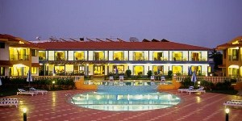
RAMADA CARAVELA BEACH RESORT
Located on the serene sands of Varca Beach, Ramada Caravela Beach Resort is a lush property, aesthetically designed to give you a rejuvenating experience. Each of the rooms and villas has a private balcony that overlooks either the ocean, landscaped gardens or one of Goa's largest pool. A 9 hole golf course, a Casino and an Ayurveda Centre, differentiates this from any other five star in Goa.
ZURI WHITE SANDS
The Zuri White Sands in Goa sits on a picturesque white-sand beach, Varca. The resort boasts of a spectacular view of the sea from their Goan styled luxury rooms. The restaurant offers authentic Goan, European and Pan Asian cuisine that is sure to tickle your taste buds.

HOLIDAY INN RESORT
Holiday Inn Resort is located at Mobor beach, Cavelossim, Goa. This five star beach resort has a huge property with a captivating style that combines traditional Goan architecture with contemporary design and luxurious finishing. You can choose spacious accommodation in a stunning beachfront setting with the option of a garden view, pool view or sea view.
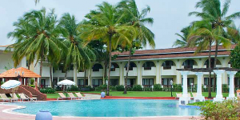
BEACH EVENTS
Meetings at Beach Shacks
The fancy beach life in Goa is livened up by the beach shacks which are commonly found on the beaches. Mostly seasonal, these shacks provide some amazing delicacies and entertainment. Conducting meetings at the beach shacks can be a perfect way to combine business with pleasure given the scenic view of the sea side, pleasant ambience, good food and music.
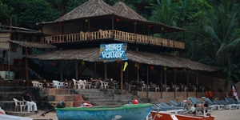
Team Building through beach sports
Goa being a beach destination offers a variety of thrilling water sports such as scuba diving, snorkelling, kayaking, banana boat rides and many more. Indulging in these team building activities facilitates bonding amongst the team mates. This is a perfect way for tourists to unwind after their hectic schedule. Beach sports is an ideal way to enjoy and have a good time along the shore with various activities that include football, volleyball and sand castle building.
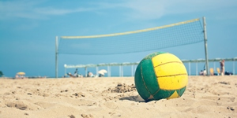
Beachside bonfire at your Gala dinners
The flamboyant and extravagant Goan nightlife by the beachside serves as a fitting place for hosting Barbeque and Gala dinners. A beautiful evening by the beach along the coast line is undoubtedly a delightful and enjoyable event. Candolim and Calangute are popular beaches where such events can be organised. Though seasonal, these bonfires have their own charm causing visitors to come back wanting for more.

Conferences at Sunset by the Shore
The spectacular beaches with picturesque sunset provide an apt setting to conduct conferences. Agonda can be a perfect place to do this because of its calm and serene beauty with no hustle and bustle of small street shops and hawkers. This unique idea is quite appealing wherein tourists can get an experience of the sandy terrains while getting their work done simultaneously. The vivacious waves bring about the attractiveness of this famous beach state of India.
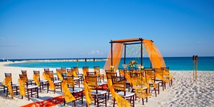
ECO RESORTS
STONE WATER ECO RESORT
Stone water eco resort is an ideal location for conferences & training sessions. It provides you with the opportunity to co-exist with nature in the comfort of your luxury cottage. This lush venue has all the required facilities required for personal as well as corporate events.
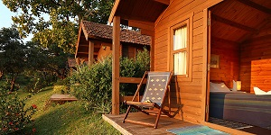
PIRACHE VILLAGE ECO RESORT GOA
Pirache Village Eco Resort Goa is an authentic incarnation of an antique Indian Village. Situated on the serene Beach of Morjim with the fluffy waves lapping the shores and the breathtaking view of Chapora fort, this resort combines with its natural surroundings to bring together this one of a kind Nature Resort.
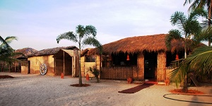
WILDERNEST
Wildernest is situated in the sprawling Swapnagandha valley, where tranquility and naturalism reign supreme amidst scenic landscapes of the Chorla Ghats. Take a dip in the resorts infinity pool, and trek along the tricky terrains of the surrounding hills. Stay at the beautiful little cottages and wake up to the sounds of chirping birds while you enjoy a breath of the most pure air.

ANANDA RESORT
Ananda Resort is set down a steep hill in Vagator amidst a canapé of coconut and bamboo trees. The hotel is famous for its calm and peaceful vibe, the full moon café is home to parties in the season and a library in the upper deck just adds to the whole charm of this nature resort.
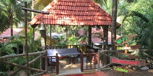
LAGUNA ANJUNA
Laguna Anjuna offers quaint cottages which are ideal for groups travelling to revel in the quiet, restful and serene setting offered here. Another distinct feature of the hotel is its large tropical garden and swimming pool. This resort is paradise for those who love their sense of space, adventure and tranquility.
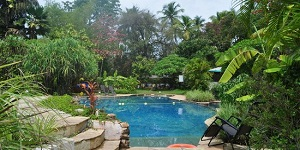